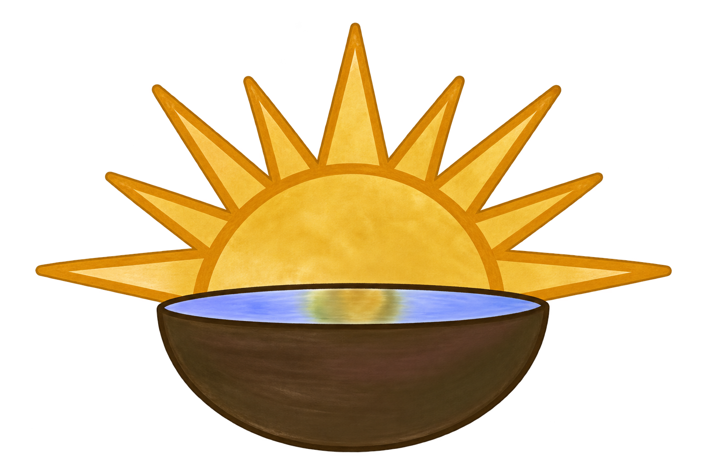

Vodder Manual Lymphatic Drainage
A gentle, specialized technique supporting lymphatic flow. Final service description and appointment length are pending client approval.
View booking details
Lomi and Lymphformerly Hale Pā MaikaʻiLomilomi · Therapeutic massage · Lymphatic care
Rooted in Hawaiʻi, Lomi and Lymph offers intentional bodywork and specialized manual lymphatic drainage with Blane Pomaikaʻi Benevedes.
Services
Appointments are available at the Honolulu studio and by mobile request. Current availability and pricing are shown on Square.
A gentle, specialized technique supporting lymphatic flow. Final service description and appointment length are pending client approval.
View booking detailsFinal service description and appointment length are pending client approval.
View booking detailsFinal service description and appointment length are pending client approval.
View booking detailsFinal service description and appointment length are pending client approval.
View booking detailsCare that travels
Mobile appointments are available in East and South Honolulu, Oʻahu, and Hilo, Hawaiʻi Island. Contact Blane first to request a mobile visit. Travel fees vary by distance and will be confirmed before scheduling.
Request Mobile ServiceMeet your practitioner
A licensed massage therapist, licensed esthetician, lomilomi practitioner and Hawaiian cultural educator serving Hawaiʻi with care grounded in both tradition and continued clinical study.
Born and raised on Oʻahu, Blane brings more than 17 years of experience in traditional Hawaiian bodywork, including Pa Ola style and lomilomi aʻe. His work is informed by years of teaching Hawaiian history, language, culture and healing in university, school and community settings.
Blane has completed advanced Manual Lymphatic Drainage and Combined Decongestive Therapy training through the Dr. Vodder International School, including study in body aesthetics and pre- and post-surgical applications. He is the only recognized Dr. Vodder International CDT therapist serving Hawaiʻi.
Alongside his bodywork practice, Blane is pursuing nursing studies with an interest in pain management, rehabilitation and community health.
The experience
Frequently asked questions
Manual lymphatic drainage is a gentle, specialized hands-on technique. Your Square booking details and a conversation with Blane can help determine which service is appropriate for you.
Studio appointments are available at 2758 South King Street, Unit 201, Honolulu. Mobile services are offered by request in East and South Honolulu, Oʻahu, and Hilo, Hawaiʻi Island.
Use the general inquiry form below, email or call Blane before booking. Do not include medical or sensitive health information in the form.
Current prices and appointment availability are shown on the Square booking site.
Insurance is not accepted at this time.
Yes. All studio and mobile visits are by appointment only.
Yes, gratuities are accepted.
Location & contact
For appointments, use Square. For general questions or mobile-service requests, contact Blane below.
Free customer parking is available in the building’s parking lot. Use the staircase facing the parking lot and proceed to Unit 201 on the second floor. The treatment space is upstairs inside Unit 201.
Accessibility: Please contact Blane before booking if you have mobility or accessibility needs so he can discuss available options with you.
This form is not for booking a confirmed appointment. Square handles appointment scheduling.